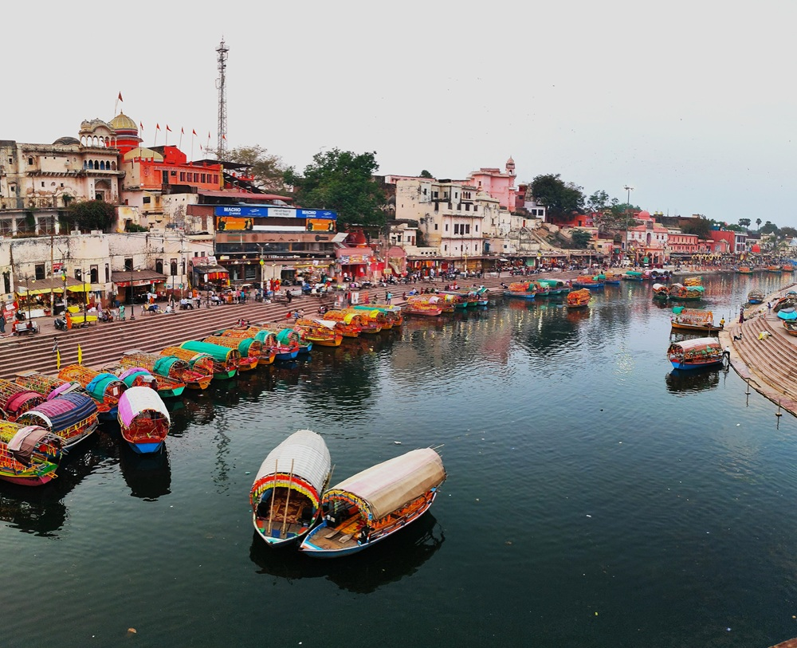
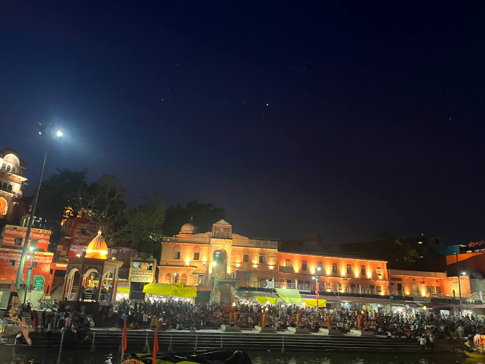
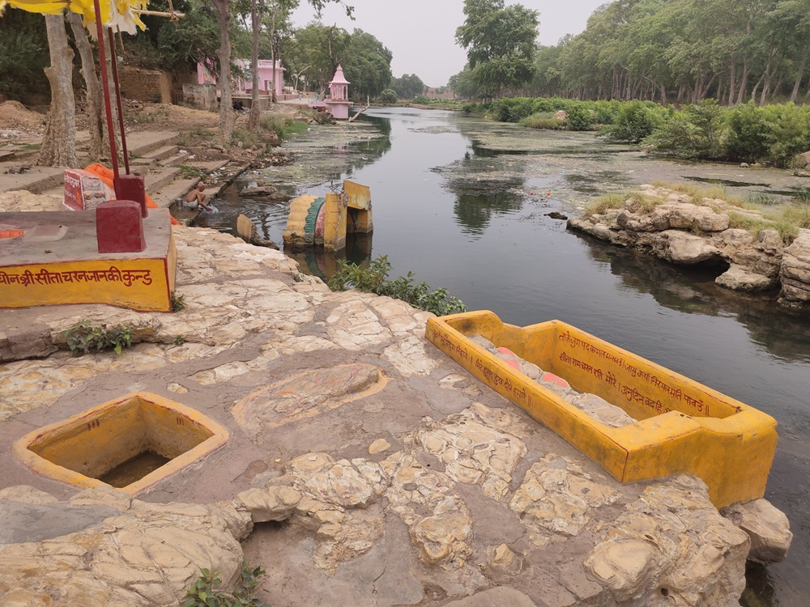
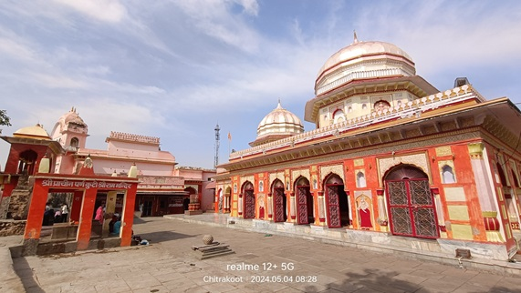
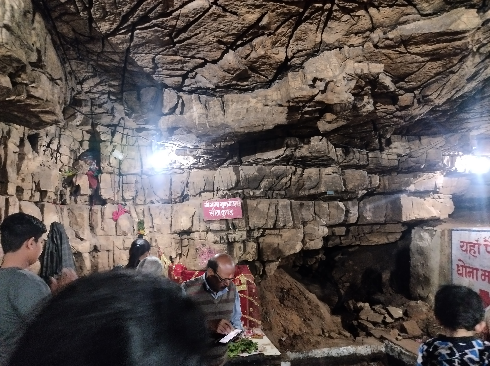
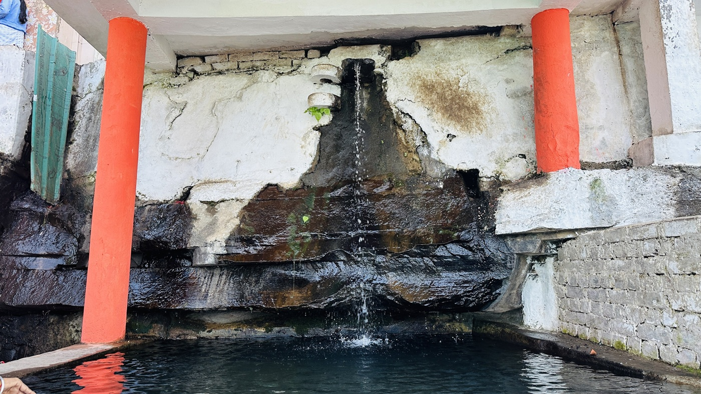
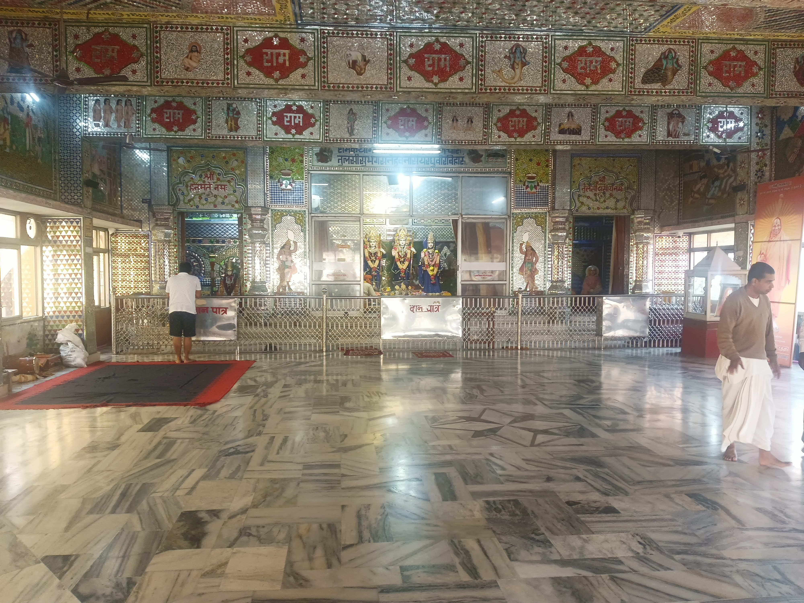
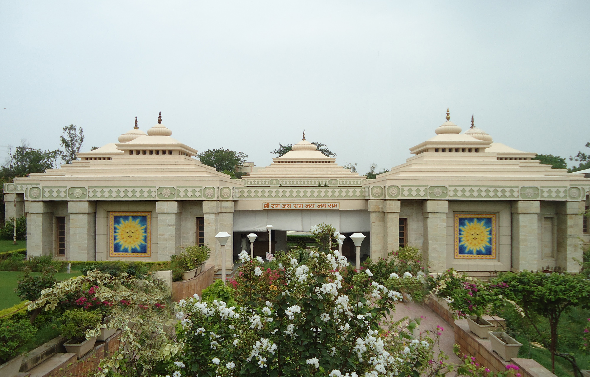

Ram Ghat
The most vibrant spot on the banks of Mandakini River – famous for evening aarti, colorful boats and peaceful river views.
ExploreChitrakoot Dham is the sacred land where Lord Rama, Goddess Sita and Lord Lakshmana spent a major part of their exile. From peaceful river ghats to mysterious caves, forest ashrams and sacred hills, every corner here holds a living story from the Ramayana.
Explore Main Attractions
Chitrakoot lies in the Vindhya ranges on the border of Uttar Pradesh and Madhya Pradesh. Mentioned in various scriptures, it is revered as a land of penance, devotion and inner awakening. The serene Mandakini River, sacred hills like Kamadgiri, natural caves and ancient hermitages make it a powerful spiritual destination for pilgrims as well as a peaceful retreat for travelers seeking calm.

According to the Ramayana, Lord Rama spent a long portion of His 14-year exile in Chitrakoot. It was here that Bharat met Him at Kamadgiri to request His return to Ayodhya. Saints like Goswami Tulsidas later glorified Chitrakoot as a place where every stone and stream echoes the name of Rama. Over time, temples, ghats and ashrams developed around these sacred spots, preserving this living heritage for generations.
From riverfront aartis to forest retreats, Chitrakoot offers a blend of faith, nature and heritage.

The most vibrant spot on the banks of Mandakini River – famous for evening aarti, colorful boats and peaceful river views.
Explore
The wish-fulfilling hill considered the main deity of Chitrakoot. Devotees perform a 5 km barefoot parikrama around its base.
Explore
A pair of natural caves, one dry and one filled with cool knee-deep water. Legends say the Godavari River appeared here secretly to glimpse Lord Rama.
Explore
A hilltop shrine where a natural water stream falls over the idol of Hanuman. Said to be created by Lord Rama to cool Him after the burning of Lanka.
Explore
A quiet forest hermitage where Sage Atri and Sati Anusuya lived. The Mandakini River is believed to originate from this very area.
Explore
A cultural complex that presents the life and ideals of Lord Rama through exhibits, tableaux and informative displays.
ExploreMajor religious celebrations that attract thousands of devotees every year
A grand celebration of the birth of Lord Rama — with processions & divine Aarti at Ram Ghat.
March – AprilThe ghats of Chitrakoot glow with lakhs of lamps — a sight closest to cosmic beauty.
October – NovemberHoly dip in Mandakini & Parikrama around Kamadgiri begins early at sunrise.
January 14Lakhs of devotees walk barefoot around Kamadgiri — a divine experience every new moon.
Every MonthChitrakoot Dham (Karwi), Uttar Pradesh & Satna District, Madhya Pradesh
October to March (pleasant weather for Darshan & Parikrama)
Free for all pilgrims and visitors